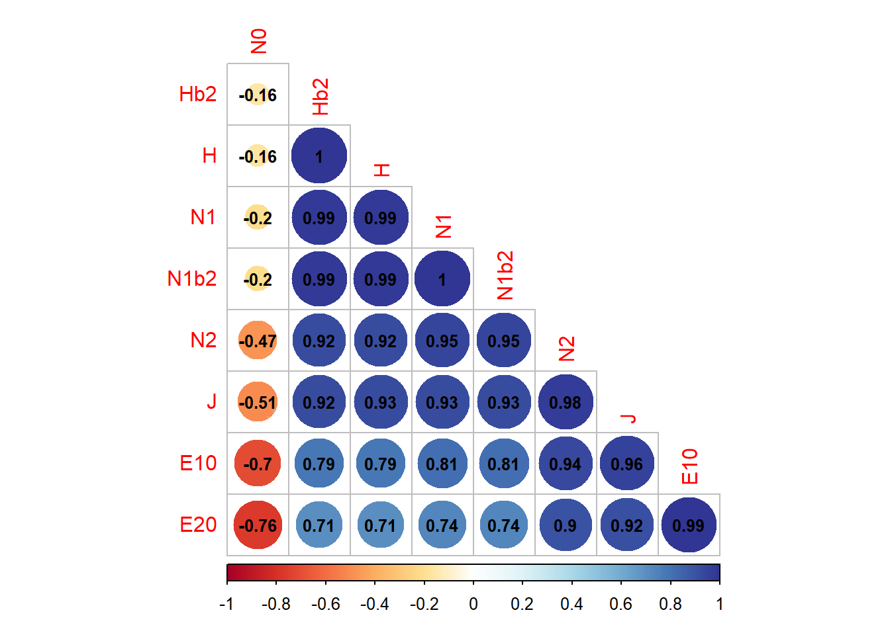

# install.packages("betapart")
# install.packages("caret")Diversidad beta - manuscrito: coprófagos del Magdalena
Objetivos
El objetivo de este análisis de diversidad beta para el ensamblaje de coprófagos, se orienta en los siguientes aspectos:
Determinar la diversidad beta general. Para conocer el nivel de similitud de las seis localidades (βSOR), el nivel de recambio (βSIM) y el nivel de anidamiento (βSNE) entre estas.
Identificar la diversidad beta espacial. Se compara la diversidad beta entre las localidades de las zonas Norte y Sur del departamento.
Comparar la diversidad beta entre parejas de localidades. Orientado a identificar las localiades más estructuradas y con potencial de conservación, debido a su mayor riqueza de especies y de anidamiento, siguiendo la propuesta de Baselga et al. (2019).
Enlaces de soporte para los cálculos de diversidad beta
Enlace Artículo en html de Baselga y Olme (2012). betapart: an R package for the study of beta diversity.
Paquete Betapar Componentes del paquete betapart, para calcular la diversidad beta en sus componentes de anidamiento y de recambio.
Paso 1. Cargar las librerías
library(betapart) # diversidad beta
require(vegan)
library(tidyverse)
library(ggplot2) # edición de figuras
library(caret) # convertir datos a binarios
library(kableExtra) # edición de tablas
library(factoextra) # Para los dendogramas
library(gridExtra) # Proyecta varias imágenes en un solo panel
Paso 2. Cargar la base de datos
Se requiere ajustarla a un formato binario, con el paquete caret.
datos = read.csv2("datos.csv", row.names=1)
datos = sapply(datos, function(x) ifelse(x > 0.5, 1, 0))
Bosques = c("L1","L2","L3","L4","L5","L6")
datos = data.frame(Bosques,datos)En la Tabla 1 se muestra la forma en que queda en formato binario.
| Bosques | Agmpsl | Cnthdc | Cnthdm | Cnthna | Cnthnj | Cnthnl | Cnthns | Cnthnv | Dltchg | Dbrctc | Dchtma | Dchtmb | Dchtmc | Erysti | Erystm | Mlgnla | Onthph | Onthpm | Phnshr | Trchlp | Urxysb | Urxysd |
|---|---|---|---|---|---|---|---|---|---|---|---|---|---|---|---|---|---|---|---|---|---|---|
| L1 | 1 | 1 | 1 | 1 | 0 | 1 | 0 | 0 | 1 | 1 | 0 | 0 | 0 | 1 | 0 | 1 | 1 | 1 | 1 | 0 | 1 | 1 |
| L2 | 0 | 0 | 0 | 0 | 0 | 1 | 0 | 1 | 1 | 0 | 0 | 0 | 0 | 1 | 1 | 0 | 1 | 1 | 0 | 0 | 1 | 1 |
| L3 | 0 | 0 | 0 | 1 | 1 | 1 | 0 | 0 | 1 | 0 | 0 | 0 | 0 | 1 | 1 | 0 | 1 | 1 | 1 | 0 | 0 | 1 |
| L4 | 1 | 0 | 1 | 0 | 0 | 1 | 1 | 0 | 1 | 0 | 1 | 1 | 1 | 1 | 1 | 1 | 1 | 1 | 0 | 0 | 1 | 0 |
| L5 | 0 | 0 | 1 | 0 | 1 | 1 | 1 | 0 | 1 | 1 | 1 | 1 | 0 | 0 | 0 | 0 | 1 | 1 | 0 | 1 | 1 | 1 |
| L6 | 0 | 0 | 1 | 1 | 1 | 0 | 1 | 1 | 1 | 1 | 1 | 1 | 1 | 1 | 1 | 1 | 1 | 1 | 1 | 0 | 1 | 1 |
Paso 3. Diversidad Beta General
Se calculará la diversidad beta general, producto de las combinaciones de las seis localidades, teniendo en cuenta lo siguente:
beta.SIM - βSIM. Valor del componente de recambio, medido como disimilitud de Simpson.
beta.SNE - βSNE. Valor del componente de anidamiento, medido como fracción resultante de anidamiento de la disimilitud de Sorensen.
beta.SOR - βSOR. Valor de la diversidad beta general, medida como disimilitud de Sorensen. beta.SOR = beta.SIM + beta.SNE o βSOR = βSIM + βSME
betapart permite calcular disimilitudes por pares (matrices de distancias) y por múltiples sitios, separando los componentes resultantes de recambio y anidamiento de la diversidad beta taxonómica (basada en incidencia y abundancia), funcional y filogenética.
# Cálculos básicos de betapar (diversidad de los sitios y entre parejas)
datos.betapart <- betapart.core(datos[,2:23])En la Tabla 2 beta.SIM= diversidad de recambio, beta.SNE= diversidad de anidamiento, beta.SOR= beta total con Sorensen. La Tabla 2 muestra que la diversidad beta general (beta.SOR) es relativamente baja, pues solo alcanza el 0.56 (56% de similitud de las especies entre localidades). La dominancia del recambio o reemplazamiento de especies entre localidades (beta.SIM) puede asociarse a un mayor desarrollo estructural y estado de conservación de los ensamblajes evaluados. Aunque segun Baselga et al. (2019), la dominancia de este patrón puede asociarse a valores de riqueza local insuficiente (ver valores de Chao 1 de cada localidad en el manuscrito), como ocurre en las localidades 1 y 5, registradas en la tabla de diversidad alfa.
| Índice | Valor |
|---|---|
| beta.SIM | 0.4285714 |
| beta.SNE | 0.1304837 |
| beta.SOR | 0.5590551 |
La Figura 1 muestra una forma de graficar los resultados de la Tabla 2.

Paso 4. Diversidad Beta por zonas (Norte y Sur)
En Tabla 3 se incorpora la clasificación de los bosques o localidades por dos zonas: Sur y Norte, para evaluar cómo es el recambio y el anidamiento de estos sectores.
| Bosques | Zonas | Agmpsl | Cnthdc | Cnthdm | Cnthna | Cnthnj | Cnthnl | Cnthns | Cnthnv | Dltchg | Dbrctc | Dchtma | Dchtmb | Dchtmc | Erysti | Erystm | Mlgnla | Onthph | Onthpm | Phnshr | Trchlp | Urxysb | Urxysd |
|---|---|---|---|---|---|---|---|---|---|---|---|---|---|---|---|---|---|---|---|---|---|---|---|
| L1 | N | 1 | 1 | 1 | 1 | 0 | 1 | 0 | 0 | 1 | 1 | 0 | 0 | 0 | 1 | 0 | 1 | 1 | 1 | 1 | 0 | 1 | 1 |
| L2 | N | 0 | 0 | 0 | 0 | 0 | 1 | 0 | 1 | 1 | 0 | 0 | 0 | 0 | 1 | 1 | 0 | 1 | 1 | 0 | 0 | 1 | 1 |
| L3 | N | 0 | 0 | 0 | 1 | 1 | 1 | 0 | 0 | 1 | 0 | 0 | 0 | 0 | 1 | 1 | 0 | 1 | 1 | 1 | 0 | 0 | 1 |
| L4 | S | 1 | 0 | 1 | 0 | 0 | 1 | 1 | 0 | 1 | 0 | 1 | 1 | 1 | 1 | 1 | 1 | 1 | 1 | 0 | 0 | 1 | 0 |
| L5 | S | 0 | 0 | 1 | 0 | 1 | 1 | 1 | 0 | 1 | 1 | 1 | 1 | 0 | 0 | 0 | 0 | 1 | 1 | 0 | 1 | 1 | 1 |
| L6 | S | 0 | 0 | 1 | 1 | 1 | 0 | 1 | 1 | 1 | 1 | 1 | 1 | 1 | 1 | 1 | 1 | 1 | 1 | 1 | 0 | 1 | 1 |
A continuación se divide la base de datos por cada zona
# Datos por zonas
sur = datos1[datos1$Zonas == "S",]
norte = datos1[datos1$Zonas == "N",]Cálculo de la diversidad beta para cada zona.
# Insumos de betapar
s.betapart <- betapart.core(sur[,3:24])
n.betapart <- betapart.core(norte[,3:24])En la Tabla 4 se organizan los datos de diversidad beta calculasos, de tal manera que permitan ser gradicados. beta.SIM= diversidad de recambio, beta.SNE= diversidad de anidamiento, beta.SOR= diversidad beta total con Sorensen. En esta tabla se observa que la diversidad beta general (beta.SOR) es mayor en la zona Norte, así como sus niveles de recambio y de anidamiento..
Similar a lo encontrado en la diversidad beta general (Tabla 2 y Figura 1) se observa que el recambio (beta.SIM) es superior al anidamiento, lo cual puede deberse a que la diversidad beta de cada zona (beta.SOR) solo alcanza el 0.4 (40% de similitud de las especies entre localidades), con un mayor recambio o reemplazamiento de especies que puede asociarse a un mayor desarrollo estructural y estado de conservación de los ensamblajes evaluados o a una riqueza local insuficiente (Baselga et al. 2019).
| Índice | Zonas | Valores |
|---|---|---|
| beta.SIM | Sur | 0.2500000 |
| beta.SNE | Sur | 0.1013514 |
| beta.SOR | Sur | 0.3513514 |
| beta.SIM | Norte | 0.2727273 |
| beta.SNE | Norte | 0.1346801 |
| beta.SOR | Norte | 0.4074074 |
La Figura 2 muestra la forma de graficar los resultados de la Tabla 4.
# Remuestreo de disimilitud de sitios múltiples para los sitios de cada zona
s.samp <- beta.sample(s.betapart, sites=3, samples=100)
n.samp <- beta.sample(n.betapart, sites=3, samples=100)
#
dist.s <- s.samp$sampled.values
dist.n <- n.samp$sampled.valuesEn la Figura 3 muestra en líneas negras a los patrones de diversidad beta de la zona Sur. Las líneas grises corresponden a los patrones de la zona Sur. Se observa la gran similitud de los tres parámetros de diversiad entre zonas, aunque son levemente mayores en la zona Norte. El recambio presenta más relación con la beta general (líneas sólida y punteada), comparado a al anidamiento que es el de menos valor (línea discontinua).
La Tabla 5 resume los resultados de las tablas 3 y 4, mostrando que la diversidad beta entre las seis localidades fue baja (0.56 o del 56%). La zona Norte presentó el valor más alto de diversidad beta (0.40 o del 40%). Para todos los casos el recambio es el componente de diversidad dominante (Tabla 5).
multi3=read.csv2("d.beta.csv")
# Tabulación de la base de datos para presentarla en el informe
multi3 %>%
kbl(caption = "") %>%
kable_classic(full_width = F, html_font = "Cambria")| Escala | βSOR | βSIM | βSNE |
|---|---|---|---|
| Localidades (6) | 0.5591 | 0.4286 | 0.1305 |
| Norte (3) | 0.4074 | 0.2727 | 0.1347 |
| Sur (3) | 0.3514 | 0.2500 | 0.1014 |
Paso 5. Diversidad beta entre pares de localidades
Este análisis se diferencia de los anteriores (Beta general y por zonas), porque βsim (recambio) y βsne (anidamiento) están en minúscula, debido a que para este caso, el análisis es por pares de localidades. pair.t indica que se comparan las seis localidades o bosques por parejas, sin tener en cuenta la zona. En los dendogramas, a mayor distancia, menor patrón de diversidad beta entre las localidades comparadas.
La Figura 4 se observa que el nivel de anidamiento (βsne) entre parejas de locaidades es más marcado (Figura 4 b) que el recambio (βsim) (Figura 4 a), lo cual difiere del patron general de diversidad beta en donde domina el recambio (βSIM) (Figura 1 y Figura 2).
A nivel de anidamiento (βsne), registrando la formación de dos grupos en donde las localidades 2 y 3 (zona Norte) se diferencian claramente del resto. Hay un anidamiento total entre las localidades 1 y 4 (Zona Norte y Sur). Según Baselga et al (2019), si el patrón de anidamiento es el que domina, los lugares con mayor riqueza de especies, son los de mayor interés de conservación, ya que pueden ser los que están surtiendo de especies al resto de lugares por su proceso de anidamiento.Las localidades 1 y 4 (Aracataca y Sabanas de San Ángel) son las de mayor riqueza, despues de la localidad 6 (Sta Barbara de Pinto), por lo que para este caso, pueden ser las candidatas para definir estrategias de conservación.
Los niveles de recambio (βsim) fueron menos marcados, registrandose el mayor entre las localidades 3 y 6 (Zonas Norte y Sur), el menor recambio lo presentó la localidad 5 (Figura 4 a).
# (beta.pair) diferencias por pares de localidades basadas en incidencia
pair.t <- beta.pair(datos1[,3:24])
En la Figura 5 tambéin se observa que el anidamiento (Figura 5 b y d) es mayor al recambio (Figura 5 a y c), siendo más marcado en la zona Sur (Figura 5 c y d).